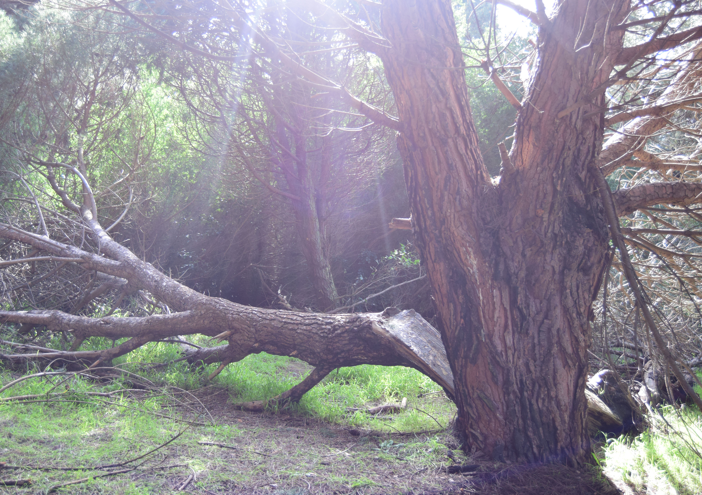

Story
Links
Setting - John McLaren Park
Story
In 2027, the world has been taken over by a deadly disease and the walking dead. Chris and Alice are running in the woods in hopes of survival. Alice is injured from tripping over a tree branch and twisted and wounded her ankle. Chris’ internal goal is to keep Alice alive. Alice is his beacon of hope through this apocalyptic world since she reminds him of his little sister who died during the first outbreak. They were running out of supplies so he wanted talk to Alice about it so he set Alice down behind a tree. Alice was losing hope and no longer want to survive the outbreak. They talked it out and it leads Chris searching for food and medical supplies. After Chris runs far away from where Alice was he heard a gunshot. Chris was in shocked.